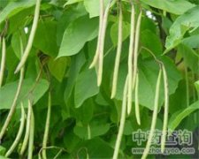

梓实

拼音
Zǐ Shí
别名
无别名
来源
为紫葳科植物梓的果实。秋、冬间摘取成熟果实，晒干。
生境分布
产湖南、河北、四川等地。
药材特点
植物形态详"梓白皮"条。
性状
蒴果呈狭线形，新鲜时，有强粘着性，熟时渐次消失。长20～30厘米，粗5～9毫米，稍弯转，暗棕色乃至黑棕色，有细纵皱并有光泽细点，粗糙而脆。基部有果柄。先端常破裂，露出种子。种子淡褐色，菲薄，长5毫米，阔2～3毫米，上下两端有长1厘米许白色光泽毛茸，中央内面有暗色脐点。种皮除去后即为胚，有子叶2片。几无味，微有收敛性。
性味
《现代实用中药》："甘，平，无毒。"
功能主治
①《现代实用中药》："利尿，治浮肿。" ②《中国药植图鉴》："外用杀虫。"
用法用量
内服：水煎，9-15g。
化学成分
果实含梓甙、脱-对-羟基苯甲酰梓甙、对-羟基苯甲酸、柠檬酸、蜡。种子含对-羟基苯甲酸。β-谷甾醇和脂肪酸。
药理作用
1：梓实水溶性提取物及果皮、种子提取物：对小白鼠、家兔均有利尿作用，并使电解质的排出增加
2：从梓实中提出有利尿作用的甙
3：在大鼠利尿实验中：脱-对-羟基苯甲酰梓甙的作用强于梓甙，前者主要表现为钠利尿，后者为氯利尿
4：大白鼠尿酸性者：二种甙的利尿作用减弱，尿碱性者利尿作用增强，两种甙对双侧肾上腺切除的大鼠均表现钠利尿
5：对大鼠碳酸酐酶无抑制作用：对循环系统几无影响
6：毒性弱
7：其利尿作用乃由于对肾小管的影响所致
摘录
《中药大辞典》